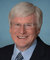

Abraham, Ralph
Representative for Louisiana's 5th congressional district, 2015-2018
Adams, Alma
Representative for North Carolina's 12th congressional district, 2014-2018
Aderholt, Robert
Representative for Alabama's 4th congressional district, 1997-2018
Aguilar, Pete
Representative for California's 31st congressional district, 2015-2018
Allen, Rick
Representative for Georgia's 12th congressional district, 2015-2018
Amash, Justin
Representative for Michigan's 3rd congressional district, 2011-2018
Amodei, Mark
Representative for Nevada's 2nd congressional district, 2011-2018
Arrington, Jodey
Representative for Texas's 19th congressional district, 2017-2018
Babin, Brian
Representative for Texas's 36th congressional district, 2015-2018
Bacon, Don
Representative for Nebraska's 2nd congressional district, 2017-2018
Banks, Jim
Representative for Indiana's 3rd congressional district, 2017-2018
Barletta, Lou
Representative for Pennsylvania's 11th congressional district, 2011-2018
Barragán, Nanette
Representative for California's 44th congressional district, 2017-2018
Barton, Joe
Representative for Texas's 6th congressional district, 1985-2018
Bass, Karen
Representative for California's 37th congressional district, 2013-2018
Beatty, Joyce
Representative for Ohio's 3rd congressional district, 2013-2018
Bera, Ami
Representative for California's 7th congressional district, 2013-2018
Bergman, Jack
Representative for Michigan's 1st congressional district, 2017-2018
Beyer, Donald
Representative for Virginia's 8th congressional district, 2015-2018
Biggs, Andy
Representative for Arizona's 5th congressional district, 2017-2018
Bilirakis, Gus
Representative for Florida's 12th congressional district, 2013-2018
Bishop, Mike
Representative for Michigan's 8th congressional district, 2015-2018
Bishop, Rob
Representative for Utah's 1st congressional district, 2003-2018
Bishop, Sanford
Representative for Georgia's 2nd congressional district, 1993-2018
Black, Diane
Representative for Tennessee's 6th congressional district, 2011-2018
Blackburn, Marsha
Representative for Tennessee's 7th congressional district, 2003-2018
Blum, Rod
Representative for Iowa's 1st congressional district, 2015-2018
Blumenauer, Earl
Representative for Oregon's 3rd congressional district, 1996-2018
Blunt, Roy
Junior Senator from Missouri, 2011-2022
Bost, Mike
Representative for Illinois's 12th congressional district, 2015-2018
Boyle, Brendan
Representative for Pennsylvania's 13th congressional district, 2015-2018
Brady, Kevin
Representative for Texas's 8th congressional district, 1997-2018
Brady, Robert
Representative for Pennsylvania's 1st congressional district, 1998-2018
Bridenstine, Jim
Representative for Oklahoma's 1st congressional district, 2013-2018
Brooks, Mo
Representative for Alabama's 5th congressional district, 2011-2018
Brooks, Susan
Representative for Indiana's 5th congressional district, 2013-2018
Brown, Anthony
Representative for Maryland's 4th congressional district, 2017-2018
Brownley, Julia
Representative for California's 26th congressional district, 2013-2018
Buchanan, Vern
Representative for Florida's 16th congressional district, 2013-2018
Buck, Ken
Representative for Colorado's 4th congressional district, 2015-2018
Bucshon, Larry
Representative for Indiana's 8th congressional district, 2011-2018
Budd, Ted
Representative for North Carolina's 13th congressional district, 2017-2018
Burgess, Michael
Representative for Texas's 26th congressional district, 2003-2018
Bustos, Cheri
Representative for Illinois's 17th congressional district, 2013-2018
Byrne, Bradley
Representative for Alabama's 1st congressional district, 2014-2018
Calvert, Ken
Representative for California's 42nd congressional district, 2013-2018
Capuano, Michael
Representative for Massachusetts's 7th congressional district, 2013-2018
Carbajal, Salud
Representative for California's 24th congressional district, 2017-2018
Carson, André
Representative for Indiana's 7th congressional district, 2008-2018
Carter, Buddy
Representative for Georgia's 1st congressional district, 2015-2018
Carter, John
Representative for Texas's 31st congressional district, 2003-2018
Castor, Kathy
Representative for Florida's 14th congressional district, 2013-2018
Castro, Joaquin
Representative for Texas's 20th congressional district, 2013-2018
Chabot, Steve
Representative for Ohio's 1st congressional district, 2011-2018
Chaffetz, Jason
Representative for Utah's 3rd congressional district, 2009-2018
Cheney, Liz
Representative for Wyoming At Large, 2017-2018
Chu, Judy
Representative for California's 27th congressional district, 2013-2018
Cicilline, David
Representative for Rhode Island's 1st congressional district, 2011-2018
Clark, Katherine
Representative for Massachusetts's 5th congressional district, 2013-2018
Clarke, Yvette
Representative for New York's 9th congressional district, 2013-2018
Clay, Lacy
Representative for Missouri's 1st congressional district, 2001-2018
Cleaver, Emanuel
Representative for Missouri's 5th congressional district, 2005-2018
Coffman, Mike
Representative for Colorado's 6th congressional district, 2009-2018
Cohen, Steve
Representative for Tennessee's 9th congressional district, 2007-2018
Cole, Tom
Representative for Oklahoma's 4th congressional district, 2003-2018
Collins, Chris
Representative for New York's 27th congressional district, 2013-2018
Collins, Doug
Representative for Georgia's 9th congressional district, 2013-2018
Comer, James
Representative for Kentucky's 1st congressional district, 2016-2018
Comstock, Barbara
Representative for Virginia's 10th congressional district, 2015-2018
Conaway, Michael
Representative for Texas's 11th congressional district, 2005-2018
Connolly, Gerald
Representative for Virginia's 11th congressional district, 2009-2018
Conyers, John
Representative for Michigan's 13th congressional district, 2013-2018
Cook, Paul
Representative for California's 8th congressional district, 2013-2018
Cooper, Jim
Representative for Tennessee's 5th congressional district, 2003-2018
Correa, Luis
Representative for California's 46th congressional district, 2017-2018
Costa, Jim
Representative for California's 16th congressional district, 2013-2018
Costello, Ryan
Representative for Pennsylvania's 6th congressional district, 2015-2018
Courtney, Joe
Representative for Connecticut's 2nd congressional district, 2007-2018
Cramer, Kevin
Representative for North Dakota At Large, 2013-2018
Crist, Charlie
Representative for Florida's 13th congressional district, 2017-2018
Cruz, Ted
Junior Senator from Texas, 2013-2018
Cuellar, Henry
Representative for Texas's 28th congressional district, 2005-2018
Culberson, John
Representative for Texas's 7th congressional district, 2001-2018
Cummings, Elijah
Representative for Maryland's 7th congressional district, 1996-2018
Curbelo, Carlos
Representative for Florida's 26th congressional district, 2015-2018
Cárdenas, Tony
Representative for California's 29th congressional district, 2013-2018
Davidson, Warren
Representative for Ohio's 8th congressional district, 2016-2018
Davis, Danny
Representative for Illinois's 7th congressional district, 1997-2018
Davis, Rodney
Representative for Illinois's 13th congressional district, 2013-2018
Davis, Susan
Representative for California's 53rd congressional district, 2003-2018
DeFazio, Peter
Representative for Oregon's 4th congressional district, 1987-2018
DeGette, Diana
Representative for Colorado's 1st congressional district, 1997-2018
DeLauro, Rosa
Representative for Connecticut's 3rd congressional district, 1991-2018
DeSantis, Ron
Representative for Florida's 6th congressional district, 2013-2018
DeSaulnier, Mark
Representative for California's 11th congressional district, 2015-2018
DelBene, Suzan
Representative for Washington's 1st congressional district, 2012-2018
Delaney, John
Representative for Maryland's 6th congressional district, 2013-2018
Demings, Val
Representative for Florida's 10th congressional district, 2017-2018
Denham, Jeff
Representative for California's 10th congressional district, 2013-2018
Dent, Charles
Representative for Pennsylvania's 15th congressional district, 2005-2018
DesJarlais, Scott
Representative for Tennessee's 4th congressional district, 2011-2018
Deutch, Theodore
Representative for Florida's 22nd congressional district, 2017-2018
Dingell, Debbie
Representative for Michigan's 12th congressional district, 2015-2018
Doggett, Lloyd
Representative for Texas's 35th congressional district, 2013-2018
Donovan, Daniel
Representative for New York's 11th congressional district, 2015-2018
Duffy, Sean
Representative for Wisconsin's 7th congressional district, 2011-2018
Duncan, Jeff
Representative for South Carolina's 3rd congressional district, 2011-2018
Dunn, Neal
Representative for Florida's 2nd congressional district, 2017-2018
Ellison, Keith
Representative for Minnesota's 5th congressional district, 2007-2018
Emmer, Tom
Representative for Minnesota's 6th congressional district, 2015-2018
Engel, Eliot
Representative for New York's 16th congressional district, 2013-2018
Eshoo, Anna
Representative for California's 18th congressional district, 2013-2018
Esty, Elizabeth
Representative for Connecticut's 5th congressional district, 2013-2018
Evans, Dwight
Representative for Pennsylvania's 2nd congressional district, 2016-2018
Faso, John
Representative for New York's 19th congressional district, 2017-2018
Ferguson, Drew
Representative for Georgia's 3rd congressional district, 2017-2018
Fitzpatrick, Brian
Representative for Pennsylvania's 8th congressional district, 2017-2018
Flores, Bill
Representative for Texas's 17th congressional district, 2011-2018
Fortenberry, Jeff
Representative for Nebraska's 1st congressional district, 2005-2018
Foster, Bill
Representative for Illinois's 11th congressional district, 2013-2018
Foxx, Virginia
Representative for North Carolina's 5th congressional district, 2005-2018
Frankel, Lois
Representative for Florida's 21st congressional district, 2017-2018
Franks, Trent
Representative for Arizona's 8th congressional district, 2013-2018
Fudge, Marcia
Representative for Ohio's 11th congressional district, 2008-2018
Gabbard, Tulsi
Representative for Hawaii's 2nd congressional district, 2013-2018
Gaetz, Matt
Representative for Florida's 1st congressional district, 2017-2018
Gallagher, Mike
Representative for Wisconsin's 8th congressional district, 2017-2018
Gallego, Ruben
Representative for Arizona's 7th congressional district, 2015-2018
Garamendi, John
Representative for California's 3rd congressional district, 2013-2018
Garrett, Thomas
Representative for Virginia's 5th congressional district, 2017-2018
Gibbs, Bob
Representative for Ohio's 7th congressional district, 2013-2018
Gohmert, Louie
Representative for Texas's 1st congressional district, 2005-2018
Goodlatte, Bob
Representative for Virginia's 6th congressional district, 1993-2018
Gosar, Paul
Representative for Arizona's 4th congressional district, 2013-2018
Gottheimer, Josh
Representative for New Jersey's 5th congressional district, 2017-2018
Gowdy, Trey
Representative for South Carolina's 4th congressional district, 2011-2018
Granger, Kay
Representative for Texas's 12th congressional district, 1997-2018
Graves, Garret
Representative for Louisiana's 6th congressional district, 2015-2018
Graves, Sam
Representative for Missouri's 6th congressional district, 2001-2018
Graves, Tom
Representative for Georgia's 14th congressional district, 2013-2018
Green, Al
Representative for Texas's 9th congressional district, 2005-2018
Green, Gene
Representative for Texas's 29th congressional district, 1993-2018
Griffith, Morgan
Representative for Virginia's 9th congressional district, 2011-2018
Grijalva, Raúl
Representative for Arizona's 3rd congressional district, 2013-2018

Grothman, Glenn
Representative for Wisconsin's 6th congressional district, 2015-2018
Guthrie, Brett
Representative for Kentucky's 2nd congressional district, 2009-2018
Gutiérrez, Luis
Representative for Illinois's 4th congressional district, 1993-2018
Harper, Gregg
Representative for Mississippi's 3rd congressional district, 2009-2018
Harris, Andy
Representative for Maryland's 1st congressional district, 2011-2018
Hartzler, Vicky
Representative for Missouri's 4th congressional district, 2011-2018
Hastings, Alcee
Representative for Florida's 20th congressional district, 2013-2018
Heck, Denny
Representative for Washington's 10th congressional district, 2013-2018
Hensarling, Jeb
Representative for Texas's 5th congressional district, 2003-2018
Hice, Jody
Representative for Georgia's 10th congressional district, 2015-2018
Higgins, Brian
Representative for New York's 26th congressional district, 2013-2018
Higgins, Clay
Representative for Louisiana's 3rd congressional district, 2017-2018
Hill, French
Representative for Arkansas's 2nd congressional district, 2015-2018
Himes, James
Representative for Connecticut's 4th congressional district, 2009-2018
Holding, George
Representative for North Carolina's 2nd congressional district, 2017-2018
Hoyer, Steny
Representative for Maryland's 5th congressional district, 1981-2018
Hudson, Richard
Representative for North Carolina's 8th congressional district, 2013-2018
Huffman, Jared
Representative for California's 2nd congressional district, 2013-2018
Huizenga, Bill
Representative for Michigan's 2nd congressional district, 2011-2018
Hultgren, Randy
Representative for Illinois's 14th congressional district, 2011-2018
Hunter, Duncan
Representative for California's 50th congressional district, 2013-2018
Hurd, Will
Representative for Texas's 23rd congressional district, 2015-2018
Issa, Darrell
Representative for California's 49th congressional district, 2003-2018
Jayapal, Pramila
Representative for Washington's 7th congressional district, 2017-2018
Jeffries, Hakeem
Representative for New York's 8th congressional district, 2013-2018
Jenkins, Evan
Representative for West Virginia's 3rd congressional district, 2015-2018
Jenkins, Lynn
Representative for Kansas's 2nd congressional district, 2009-2018
Johnson, Bill
Representative for Ohio's 6th congressional district, 2011-2018
Johnson, Eddie
Representative for Texas's 30th congressional district, 1993-2018
Johnson, Mike
Representative for Louisiana's 4th congressional district, 2017-2018
Johnson, Sam
Representative for Texas's 3rd congressional district, 1991-2018
Jones, Walter
Representative for North Carolina's 3rd congressional district, 1995-2018
Jordan, Jim
Representative for Ohio's 4th congressional district, 2007-2018
Joyce, David
Representative for Ohio's 14th congressional district, 2013-2018
Kaptur, Marcy
Representative for Ohio's 9th congressional district, 1983-2018
Katko, John
Representative for New York's 24th congressional district, 2015-2018
Keating, William
Representative for Massachusetts's 9th congressional district, 2013-2018
Kelly, Mike
Representative for Pennsylvania's 3rd congressional district, 2011-2018
Kelly, Robin
Representative for Illinois's 2nd congressional district, 2013-2018
Kelly, Trent
Representative for Mississippi's 1st congressional district, 2015-2018
Kennedy, Joseph
Representative for Massachusetts's 4th congressional district, 2013-2018
Khanna, Ro
Representative for California's 17th congressional district, 2017-2018
Kihuen, Ruben
Representative for Nevada's 4th congressional district, 2017-2018
Kildee, Daniel
Representative for Michigan's 5th congressional district, 2013-2018
Kilmer, Derek
Representative for Washington's 6th congressional district, 2013-2018
Kind, Ron
Representative for Wisconsin's 3rd congressional district, 1997-2018
King, Steve
Representative for Iowa's 4th congressional district, 2013-2018
Kinzinger, Adam
Representative for Illinois's 16th congressional district, 2013-2018
Knight, Steve
Representative for California's 25th congressional district, 2015-2018
Kuster, Ann
Representative for New Hampshire's 2nd congressional district, 2013-2018
Kustoff, David
Representative for Tennessee's 8th congressional district, 2017-2018
LaHood, Darin
Representative for Illinois's 18th congressional district, 2015-2018
LaMalfa, Doug
Representative for California's 1st congressional district, 2013-2018
Labrador, Raúl
Representative for Idaho's 1st congressional district, 2011-2018
Lamborn, Doug
Representative for Colorado's 5th congressional district, 2007-2018
Lance, Leonard
Representative for New Jersey's 7th congressional district, 2009-2018
Larsen, Rick
Representative for Washington's 2nd congressional district, 2001-2018
Larson, John
Representative for Connecticut's 1st congressional district, 1999-2018
Latta, Robert
Representative for Ohio's 5th congressional district, 2007-2018
Lawrence, Brenda
Representative for Michigan's 14th congressional district, 2015-2018
Lawson, Al
Representative for Florida's 5th congressional district, 2017-2018
Lee, Barbara
Representative for California's 13th congressional district, 2013-2018
Lee, Mike
Junior Senator from Utah, 2011-2022
Levin, Sander
Representative for Michigan's 9th congressional district, 2013-2018
Lewis, Jason
Representative for Minnesota's 2nd congressional district, 2017-2018
Lewis, John
Representative for Georgia's 5th congressional district, 1987-2018
Lieu, Ted
Representative for California's 33rd congressional district, 2015-2018
Lipinski, Daniel
Representative for Illinois's 3rd congressional district, 2005-2018
LoBiondo, Frank
Representative for New Jersey's 2nd congressional district, 1995-2018
Loebsack, David
Representative for Iowa's 2nd congressional district, 2007-2018
Lofgren, Zoe
Representative for California's 19th congressional district, 2013-2018
Long, Billy
Representative for Missouri's 7th congressional district, 2011-2018
Loudermilk, Barry
Representative for Georgia's 11th congressional district, 2015-2018
Love, Mia
Representative for Utah's 4th congressional district, 2015-2018
Lowenthal, Alan
Representative for California's 47th congressional district, 2013-2018
Lowey, Nita
Representative for New York's 17th congressional district, 2013-2018
Lucas, Frank
Representative for Oklahoma's 3rd congressional district, 2003-2018
Luján, Ben
Representative for New Mexico's 3rd congressional district, 2009-2018
Lynch, Stephen
Representative for Massachusetts's 8th congressional district, 2013-2018
MacArthur, Tom
Representative for New Jersey's 3rd congressional district, 2015-2018
Maloney, Carolyn
Representative for New York's 12th congressional district, 2013-2018
Maloney, Sean
Representative for New York's 18th congressional district, 2013-2018
Marchant, Kenny
Representative for Texas's 24th congressional district, 2005-2018
Marino, Tom
Representative for Pennsylvania's 10th congressional district, 2011-2018
Marshall, Roger
Representative for Kansas's 1st congressional district, 2017-2018
Massie, Thomas
Representative for Kentucky's 4th congressional district, 2012-2018
Mast, Brian
Representative for Florida's 18th congressional district, 2017-2018
Matsui, Doris
Representative for California's 6th congressional district, 2013-2018
McCarthy, Kevin
Representative for California's 23rd congressional district, 2013-2018
McCaul, Michael
Representative for Texas's 10th congressional district, 2005-2018
McClintock, Tom
Representative for California's 4th congressional district, 2009-2018
McCollum, Betty
Representative for Minnesota's 4th congressional district, 2001-2018
McEachin, Donald
Representative for Virginia's 4th congressional district, 2017-2018
McHenry, Patrick
Representative for North Carolina's 10th congressional district, 2005-2018
McKinley, David
Representative for West Virginia's 1st congressional district, 2011-2018
McNerney, Jerry
Representative for California's 9th congressional district, 2013-2018
McSally, Martha
Representative for Arizona's 2nd congressional district, 2015-2018
Meadows, Mark
Representative for North Carolina's 11th congressional district, 2013-2018
Meehan, Patrick
Representative for Pennsylvania's 7th congressional district, 2011-2018
Meeks, Gregory
Representative for New York's 5th congressional district, 2013-2018
Meng, Grace
Representative for New York's 6th congressional district, 2013-2018
Messer, Luke
Representative for Indiana's 6th congressional district, 2013-2018
Mitchell, Paul
Representative for Michigan's 10th congressional district, 2017-2018
Moolenaar, John
Representative for Michigan's 4th congressional district, 2015-2018
Mooney, Alex
Representative for West Virginia's 2nd congressional district, 2015-2018
Moore, Gwen
Representative for Wisconsin's 4th congressional district, 2005-2018
Moulton, Seth
Representative for Massachusetts's 6th congressional district, 2015-2018
Mullin, Markwayne
Representative for Oklahoma's 2nd congressional district, 2013-2018
Murphy, Tim
Representative for Pennsylvania's 18th congressional district, 2003-2018
Nadler, Jerrold
Representative for New York's 10th congressional district, 2013-2018
Napolitano, Grace
Representative for California's 32nd congressional district, 2013-2018
Neal, Richard
Representative for Massachusetts's 1st congressional district, 2013-2018
Newhouse, Dan
Representative for Washington's 4th congressional district, 2015-2018
Noem, Kristi
Representative for South Dakota At Large, 2011-2018
Nolan, Richard
Representative for Minnesota's 8th congressional district, 2013-2018
Norcross, Donald
Representative for New Jersey's 1st congressional district, 2014-2018
Nunes, Devin
Representative for California's 22nd congressional district, 2013-2018
O'Halleran, Tom
Representative for Arizona's 1st congressional district, 2017-2018
O'Rourke, Beto
Representative for Texas's 16th congressional district, 2013-2018
Olson, Pete
Representative for Texas's 22nd congressional district, 2009-2018
Palazzo, Steven
Representative for Mississippi's 4th congressional district, 2011-2018
Pallone, Frank
Representative for New Jersey's 6th congressional district, 1993-2018
Palmer, Gary
Representative for Alabama's 6th congressional district, 2015-2018
Panetta, Jimmy
Representative for California's 20th congressional district, 2017-2018
Pascrell, Bill
Representative for New Jersey's 9th congressional district, 2013-2018
Paul, Rand
Junior Senator from Kentucky, 2011-2022
Paulsen, Erik
Representative for Minnesota's 3rd congressional district, 2009-2018
Payne, Donald
Representative for New Jersey's 10th congressional district, 2012-2018
Pelosi, Nancy
Representative for California's 12th congressional district, 2013-2018
Perlmutter, Ed
Representative for Colorado's 7th congressional district, 2007-2018
Perry, Scott
Representative for Pennsylvania's 4th congressional district, 2013-2018
Peters, Scott
Representative for California's 52nd congressional district, 2013-2018
Peterson, Collin
Representative for Minnesota's 7th congressional district, 1991-2018
Pingree, Chellie
Representative for Maine's 1st congressional district, 2009-2018
Pittenger, Robert
Representative for North Carolina's 9th congressional district, 2013-2018
Pocan, Mark
Representative for Wisconsin's 2nd congressional district, 2013-2018
Poe, Ted
Representative for Texas's 2nd congressional district, 2005-2018
Poliquin, Bruce
Representative for Maine's 2nd congressional district, 2015-2018
Polis, Jared
Representative for Colorado's 2nd congressional district, 2009-2018
Posey, Bill
Representative for Florida's 8th congressional district, 2013-2018
Price, David
Representative for North Carolina's 4th congressional district, 1997-2018
Quigley, Mike
Representative for Illinois's 5th congressional district, 2009-2018
Raskin, Jamie
Representative for Maryland's 8th congressional district, 2017-2018
Ratcliffe, John
Representative for Texas's 4th congressional district, 2015-2018
Reed, Tom
Representative for New York's 23rd congressional district, 2013-2018
Reichert, David
Representative for Washington's 8th congressional district, 2005-2018
Renacci, James
Representative for Ohio's 16th congressional district, 2011-2018
Rice, Kathleen
Representative for New York's 4th congressional district, 2015-2018
Rice, Tom
Representative for South Carolina's 7th congressional district, 2013-2018
Richmond, Cedric
Representative for Louisiana's 2nd congressional district, 2011-2018
Roby, Martha
Representative for Alabama's 2nd congressional district, 2011-2018
Roe, David “Phil”
Representative for Tennessee's 1st congressional district, 2009-2018
Rogers, Mike
Representative for Alabama's 3rd congressional district, 2003-2018
Rohrabacher, Dana
Representative for California's 48th congressional district, 2013-2018
Rokita, Todd
Representative for Indiana's 4th congressional district, 2011-2018
Rooney, Francis
Representative for Florida's 19th congressional district, 2017-2018
Rooney, Thomas
Representative for Florida's 17th congressional district, 2013-2018
Rosen, Jacky
Representative for Nevada's 3rd congressional district, 2017-2018
Roskam, Peter
Representative for Illinois's 6th congressional district, 2007-2018
Ross, Dennis
Representative for Florida's 15th congressional district, 2013-2018
Rothfus, Keith
Representative for Pennsylvania's 12th congressional district, 2013-2018
Rouzer, David
Representative for North Carolina's 7th congressional district, 2015-2018
Ruiz, Raul
Representative for California's 36th congressional district, 2013-2018
Rush, Bobby
Representative for Illinois's 1st congressional district, 1993-2018
Russell, Steve
Representative for Oklahoma's 5th congressional district, 2015-2018
Rutherford, John
Representative for Florida's 4th congressional district, 2017-2018
Ryan, Paul
Representative for Wisconsin's 1st congressional district, 1999-2018
Ryan, Tim
Representative for Ohio's 13th congressional district, 2013-2018
Sarbanes, John
Representative for Maryland's 3rd congressional district, 2007-2018
Scalise, Steve
Representative for Louisiana's 1st congressional district, 2008-2018
Schiff, Adam
Representative for California's 28th congressional district, 2013-2018
Schrader, Kurt
Representative for Oregon's 5th congressional district, 2009-2018
Scott, Austin
Representative for Georgia's 8th congressional district, 2011-2018
Scott, David
Representative for Georgia's 13th congressional district, 2003-2018
Scott, Tim
Junior Senator from South Carolina, 2013-2022
Serrano, José
Representative for New York's 15th congressional district, 2013-2018
Sessions, Pete
Representative for Texas's 32nd congressional district, 2003-2018
Sewell, Terri
Representative for Alabama's 7th congressional district, 2011-2018
Shea-Porter, Carol
Representative for New Hampshire's 1st congressional district, 2017-2018
Sherman, Brad
Representative for California's 30th congressional district, 2013-2018
Shimkus, John
Representative for Illinois's 15th congressional district, 2013-2018
Shuster, Bill
Representative for Pennsylvania's 9th congressional district, 2001-2018
Sinema, Kyrsten
Representative for Arizona's 9th congressional district, 2013-2018
Sires, Albio
Representative for New Jersey's 8th congressional district, 2013-2018
Slaughter, Louise
Representative for New York's 25th congressional district, 2013-2018
Smith, Adam
Representative for Washington's 9th congressional district, 1997-2018
Smith, Adrian
Representative for Nebraska's 3rd congressional district, 2007-2018
Smith, Jason
Representative for Missouri's 8th congressional district, 2013-2018
Smith, Lamar
Representative for Texas's 21st congressional district, 1987-2018
Smucker, Lloyd
Representative for Pennsylvania's 16th congressional district, 2017-2018
Soto, Darren
Representative for Florida's 9th congressional district, 2017-2018
Speier, Jackie
Representative for California's 14th congressional district, 2013-2018
Stefanik, Elise
Representative for New York's 21st congressional district, 2015-2018
Stewart, Chris
Representative for Utah's 2nd congressional district, 2013-2018
Stivers, Steve
Representative for Ohio's 15th congressional district, 2011-2018
Suozzi, Thomas
Representative for New York's 3rd congressional district, 2017-2018
Swalwell, Eric
Representative for California's 15th congressional district, 2013-2018
Sánchez, Linda
Representative for California's 38th congressional district, 2013-2018
Takano, Mark
Representative for California's 41st congressional district, 2013-2018
Taylor, Scott
Representative for Virginia's 2nd congressional district, 2017-2018
Tenney, Claudia
Representative for New York's 22nd congressional district, 2017-2018
Thompson, Bennie
Representative for Mississippi's 2nd congressional district, 1993-2018
Thompson, Glenn
Representative for Pennsylvania's 5th congressional district, 2009-2018
Thompson, Mike
Representative for California's 5th congressional district, 2013-2018
Thornberry, Mac
Representative for Texas's 13th congressional district, 1995-2018
Thune, John
Senior Senator from South Dakota, 2005-2022
Tipton, Scott
Representative for Colorado's 3rd congressional district, 2011-2018
Titus, Dina
Representative for Nevada's 1st congressional district, 2013-2018
Tonko, Paul
Representative for New York's 20th congressional district, 2013-2018
Torres, Norma
Representative for California's 35th congressional district, 2015-2018
Trott, Dave
Representative for Michigan's 11th congressional district, 2015-2018
Tsongas, Niki
Representative for Massachusetts's 3rd congressional district, 2013-2018
Turner, Michael
Representative for Ohio's 10th congressional district, 2013-2018
Udall, Tom
Senior Senator from New Mexico, 2009-2020
Upton, Fred
Representative for Michigan's 6th congressional district, 1993-2018
Valadao, David
Representative for California's 21st congressional district, 2013-2018
Vargas, Juan
Representative for California's 51st congressional district, 2013-2018
Veasey, Marc
Representative for Texas's 33rd congressional district, 2013-2018
Vela, Filemon
Representative for Texas's 34th congressional district, 2013-2018
Velázquez, Nydia
Representative for New York's 7th congressional district, 2013-2018
Visclosky, Peter
Representative for Indiana's 1st congressional district, 1985-2018
Wagner, Ann
Representative for Missouri's 2nd congressional district, 2013-2018
Walberg, Tim
Representative for Michigan's 7th congressional district, 2011-2018
Walden, Greg
Representative for Oregon's 2nd congressional district, 1999-2018
Walker, Mark
Representative for North Carolina's 6th congressional district, 2015-2018
Walorski, Jackie
Representative for Indiana's 2nd congressional district, 2013-2018
Walters, Mimi
Representative for California's 45th congressional district, 2015-2018
Walz, Timothy
Representative for Minnesota's 1st congressional district, 2007-2018
Waters, Maxine
Representative for California's 43rd congressional district, 2013-2018
Weber, Randy
Representative for Texas's 14th congressional district, 2013-2018
Webster, Daniel
Representative for Florida's 11th congressional district, 2017-2018
Wenstrup, Brad
Representative for Ohio's 2nd congressional district, 2013-2018
Westerman, Bruce
Representative for Arkansas's 4th congressional district, 2015-2018
Williams, Roger
Representative for Texas's 25th congressional district, 2013-2018
Wilson, Frederica
Representative for Florida's 24th congressional district, 2013-2018
Wilson, Joe
Representative for South Carolina's 2nd congressional district, 2001-2018
Wittman, Robert
Representative for Virginia's 1st congressional district, 2007-2018
Womack, Steve
Representative for Arkansas's 3rd congressional district, 2011-2018
Woodall, Rob
Representative for Georgia's 7th congressional district, 2011-2018
Yarmuth, John
Representative for Kentucky's 3rd congressional district, 2007-2018
Yoder, Kevin
Representative for Kansas's 3rd congressional district, 2011-2018
Yoho, Ted
Representative for Florida's 3rd congressional district, 2013-2018
Young, David
Representative for Iowa's 3rd congressional district, 2015-2018
Young, Don
Representative for Alaska At Large, 1973-2018
Zeldin, Lee
Representative for New York's 1st congressional district, 2015-2018
Loading...